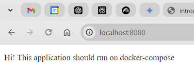

We want to create a web server to run some HTML code. A very small image can be created using httpd which will use a cutdown version of Alpine as the operating system. This will only be around 55 Mb in size.
Command to pull the image: docker pull httpd:alpine .
We won't use this but will use a build command to create the image.
We now create a folder to hold our web source code which consists of a simple HTML page named Index.html.
Root folder IntroToDocker, contains Dockerfile that is used to build our image.
Sub folder html, contains an Index.html page.
FROM httpd:alpine
COPY ./html/ /usr/local/apache2/htdocs/
Where FROM is the image to pull.
And we COPY our files from the ./html/ folder and load them into the Alpine image folder, /usr/local/apache2/htdocs/ .
We are now able to user our Dockerfile to build an image.
docker build -t hello-docker:1.0.0 .
Do a search for the image you created.
docker images h*
REPOSITORY TAG IMAGE ID CREATED SIZE hello-docker 1.0.0 113447870bc6 3 minutes ago 55MB hellonode latest fc0b418d4dbd 11 months ago 113MB hello-world latest feb5d9fea6a5 13 months ago 13.3kB
We can do a history on the image using the Image Id.
docker image history 113
Is the complete setup of our image and includes the byte size of each part.
IMAGE CREATED CREATED BY SIZE COMMENT
113447870bc6 3 minutes ago COPY ./html/ /usr/local/apache2/htdocs/ # bu… 349B buildkit.dockerfile.v0
<missing> 4 weeks ago /bin/sh -c #(nop) CMD ["httpd-foreground"] 0B
<missing> 4 weeks ago /bin/sh -c #(nop) EXPOSE 80 0B
<missing> 4 weeks ago /bin/sh -c #(nop) COPY file:c432ff61c4993ecd… 138B
<missing> 4 weeks ago /bin/sh -c #(nop) STOPSIGNAL SIGWINCH 0B
<missing> 4 weeks ago /bin/sh -c set -eux; apk add --no-cache --… 12.7MB
<missing> 4 weeks ago /bin/sh -c #(nop) ENV HTTPD_PATCHES= 0B
<missing> 4 weeks ago /bin/sh -c #(nop) ENV HTTPD_SHA256=eb397fee… 0B
<missing> 4 weeks ago /bin/sh -c #(nop) ENV HTTPD_VERSION=2.4.54 0B
<missing> 4 weeks ago /bin/sh -c set -eux; apk add --no-cache a… 36.7MB
<missing> 4 weeks ago /bin/sh -c #(nop) WORKDIR /usr/local/apache2 0B
<missing> 4 weeks ago /bin/sh -c mkdir -p "$HTTPD_PREFIX" && chow… 0B
<missing> 4 weeks ago /bin/sh -c #(nop) ENV PATH=/usr/local/apach… 0B
<missing> 4 weeks ago /bin/sh -c #(nop) ENV HTTPD_PREFIX=/usr/loc… 0B
<missing> 4 weeks ago /bin/sh -c set -x && adduser -u 82 -D -S -G… 4.68kB
<missing> 2 months ago /bin/sh -c #(nop) CMD ["/bin/sh"] 0B
<missing> 2 months ago /bin/sh -c #(nop) ADD file:2a949686d9886ac7c… 5.54MB
The bottom line is the operating system and this is the first thing that was created.
This line is the web server.
/bin/sh -c set -eux; apk add --no-cache a… 36.7MB
This line (the latest line) is the code we copied into the image.
COPY ./html/ /usr/local/apache2/htdocs/ # bu… 349B
We now create a container to run our image. The container is read/write so we can add content to it. If you stop running the container you will lose your changes because the container will be created from your existing image which is read only.
If you destroy the container it is gone but the image stays until you remove it.
docker run --name first-container -p 8080:80 hello-docker:1.0.0
We call our container first-container.
We need a port to run our web server, -p 8080:80 .
8080 is a port on our system and 80 is used to connect to the image, hello-docker:1.0.0 .
We usually only need the first 3 characters of the Container Id to identify it.
If we look at our Powershell output we see the line.
172.17.0.1 - - [07/Nov/2022:07:13:04 +0000] "GET / HTTP/1.1" 200 185
This is returning the Index.html page (return status 200) and it returned 185 bytes.
This is the container we are running with its image name and tag.
CONTAINER ID IMAGE ...
a014eaedaf47 hello-docker:1.0.0
We can stop the container from running by.
docker stop a01
If we want to remove the container.
docker rm a01
Note: if we want to delete the container after we are finished we could have done this.
docker run --rm --name first-container -p 8080:80 hello-docker:1.0.0
Add a new file to our html folder named help.html.
The original hello-docker:1.0.0 image won't have our changes because images never change so we will create a new image with our changes in it.
docker build -t hello-docker:1.0.1 .
To check our images
docker images hello-docker*
REPOSITORY TAG IMAGE ID CREATED SIZE hello-docker 1.0.1 71a874cb898c About a minute ago 55MB hello-docker 1.0.0 113447870bc6 About an hour ago 55MB
We increment the tag and we can run it with.
docker run --name second-container -p 8080:80 hello-docker:1.0.1
We now have our new website running.
Note: we can't name two containers with the same name. This would cause an error.
We now have two images with both containing different code.
docker images hello-docker*
REPOSITORY TAG IMAGE ID CREATED SIZE hello-docker 1.0.1 71a874cb898c 2 hours ago 55MB hello-docker 1.0.0 113447870bc6 3 hours ago 55MB
Shows that I have two images. I know know that hello-docker:1.0.1 has my full web source so I can delete hello-docker:1.0.0.
docker rmi 113
Where rmi removes an image.
You can build and tear down images and containers very quickly and easily.
Once you finish testing you can deploy your code and remove your images.
Docker saves you from having to install a lot of software on your system. You can create an image and use that.
A Docker image will never change so once you get your code working it will work forever on any system or cloud that runs Docker images.
docker container prune
Create an Nginx website in a container.
docker run --rm -p 8080:80 --name nginx-compose nginx
This will show the standard Nginx web page. What if we want to add our own web page?
Create a project with a folder named static-site. In this folder add an index.html page.
Now run this command. Note that this command will only run in Linux.
docker run --rm -p 8080:80 --name nginx-compose -v $(pwd)/static-site:/usr/share/nginx/html nginx
When I run this on a Windows PC with Powershell I get an error. To get around this in Powershell.
docker run --rm -p 8080:80 --name nginx-compose -v $PWD/static-site:/usr/share/nginx/html nginx
This returns.

I can also run this using Curl.
curl localhost:8080/index.html
Returns.
<!DOCTYPE html>
<html>
<head>
<title>Hello World</title>
</head>
<body>
<p>Hi! This application should run on docker-compose</p>
</body>
</html>
Now we have everything needed to migrate this application to Compose. We will create a Compose file for the default NGINX installation:
services:
nginx:
image: nginx
ports:
- 8080:80
When we run this it will show the default NGINX web page. To run our web page add this to the docker-compose.yml file.
services:
nginx:
image: nginx
ports:
- 8080:80
volumes:
- ./static-site:/usr/share/nginx/html
Adding the volumes will allow us to run our own HTML content.
By using Compose, we have achieved running the default NGINX image and changing the default HTML page that was displayed.
NGINX outputs logfiles in a text format and we want to change this output to JSON data.
We have a running container so we can shell into the container to check the configuration file.
docker exec -it docker-nginx-nginx-1 cat /etc/nginx/nginx.conf
We use cat to print out the configuration file.
This is the section that contains the logfile configuration.
log_format main '$remote_addr - $remote_user [$time_local] "$request" ' '$status $body_bytes_sent "$http_referer" ' '"$http_user_agent" "$http_x_forwarded_for"';
We will copy the file locally to apply the JSON configuration change:
docker cp docker-nginx-nginx-1:/etc/nginx/nginx.conf nginx.conf
This copies the configuration file to our project folder.
We will change the log_format to.
log_format main escape=json '{"remote_addr":"$remote_addr","remote_user":"$remote_user","time":"[$time_local]","request":"$request",'"status":"$status","body_bytes_sent":"$body_bytes_sent","http_referer":"$http_referer",'"http_user_agent":"$http_user_agent","http_x_forwarded_for":"$http_x_forwarded_for"}';
Note: I had problems with the log_format command. I changed it to one long line of text.
Now stop the current container and change the image to allow for the new configuration file.
We need to create a Dockerfile.
FROM nginx
COPY nginx.conf /etc/nginx/nginx.conf
Create a new image.
docker build -t custom-nginx:0.1 .
Now we need to change the docker-compose.yml file to allow for the custom image that we created.
services:
nginx:
image: custom-nginx:0.1
ports:
- 8080:80
volumes:
- ./static-site:/usr/share/nginx/html
There are two logfiles created by the NGINX container.
/var/log/nginx/access.log
/var/log/nginx/error.log
I exec'd into this container and couldn't see any logs. To see the logfiles you can run the following command to continuously stream the logfiles.
docker logs -f 0463
-f streams the logfiles continuously for the container 0463.
To be able to see content from the logfiles I requested a dummy webpage and this created an error.
Most of the output was in a JSON format so I know that my configuration changes are working.
At present the images we are using are locked to our local computer. What can we do to use the image from anywhere in the world. We would host it in a centralised image registry.
There are a number of image registries but we will be using Docker Hub.
My image registry on Docker hub is alanrob17. My Docker Hub.
I have a number of images hosted on Docker hub and the format for these images is.
alanrob17/record-app-nginx:ctr2024
Where:
alanrob17 is my Docker Hub ID.record-app-nginx is my Image.Note: I don't have a Tag on this image so my real registry image is.
alanrob17/record-app-nginx
Note: in future I need to give each image a Tag.
To push to Docker hub.
docker image push alanrob17/record-app-nginx
So at this stage we have created our application. We have created a Dockerfile that tells Docker how to package our application up and pushed it to Docker Hub.
It can be found at (Record app)[https://hub.docker.com/r/alanrob17/record-app-nginx].
Imagine that an image is a stopped container and a container is a running image.
First things is to delete your current image.
Now run.
docker container run -d --rm --name alan-web -p 8000:80 alanrob17/record-app-nginx
Returns.
97f9a0651629f2636fd7df59fc50ca09a0f2ac078794c5a26fbb81396f89e2ee
As we are running detached it just leaves us with the ID of the container.
Breakdown of the command.
-d means run detached.-rm means remove the container once it is finished running.--name alan-web means alan-web is the name of the container-p 8000:80 means ports. 8000 is the port on the Docker host and 80 is the port that the container is listening on.alanrob17/record-app-nginx is the image that we want to use. In this case it doesn't exist on our local machine so it will try to find and pull it from Docker hub.Note: the full name of the image is docker.io/alanrob17/record-app-nginx. If you don't add docker.io it assumes that you are pulling the image form Docker Hub.
You can list the containers running with.
docker container ps
Or.
docker container ls
We currently have a containerised application running and we can run this to stop it.
docker container stop alan-web
Or.
docker container stop 97f9a
Where 97f9a is the start of the container Id.
We can then remove the container if we need to with.
docker container rm alan-web
Note: we didn't have to do this because we used the switch --rm which automatically remove the container once we finished running it.
In the previous example we used the switch -d to detach the container from our terminal. We don't have to do this and we can watch the container running with the -it switch which means interactively or in a terminal.
Run another container from an image.
docker container run -it --name alpine-test alpine sh
This time it leaves you with a command prompt.
You are inside the shell and can run commands.
You can exit the shell with the command exit.
If you want to leave the shell (container) running you can exit gracefully with Ctrl-P-Q.
If you do a docker ps you will notice that the container is still running.
If you want to stop and remove the container in one command.
docker rm alpine-test -f